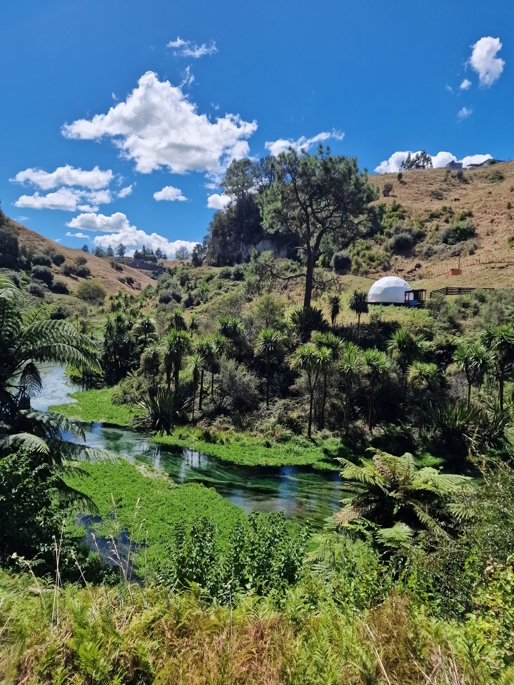
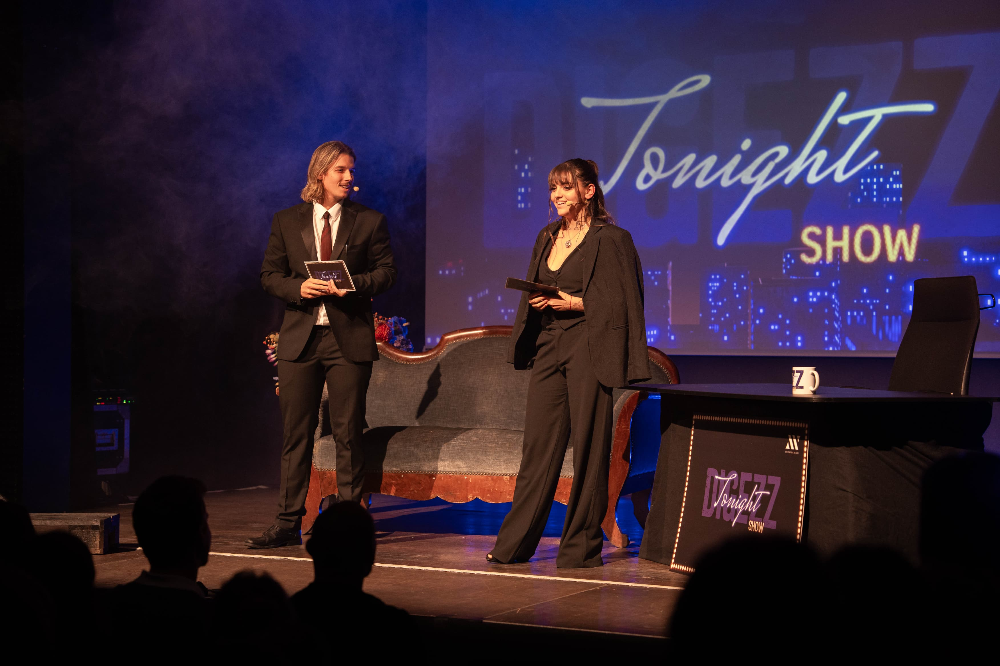
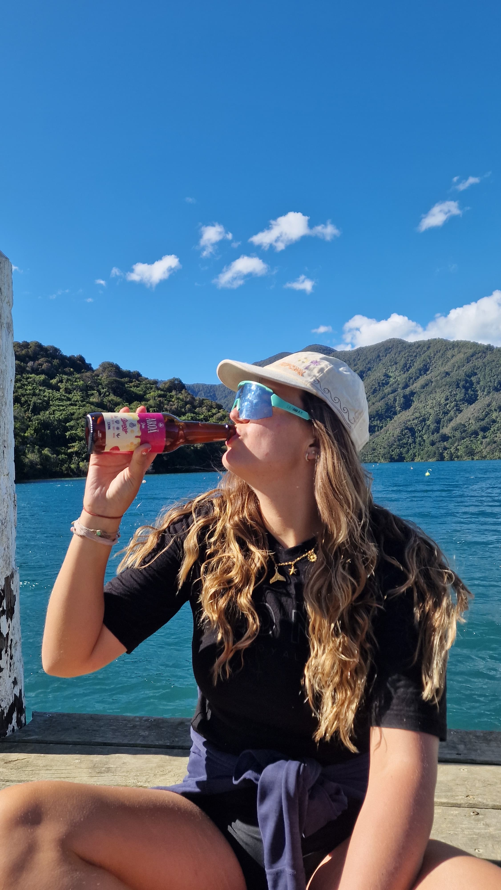
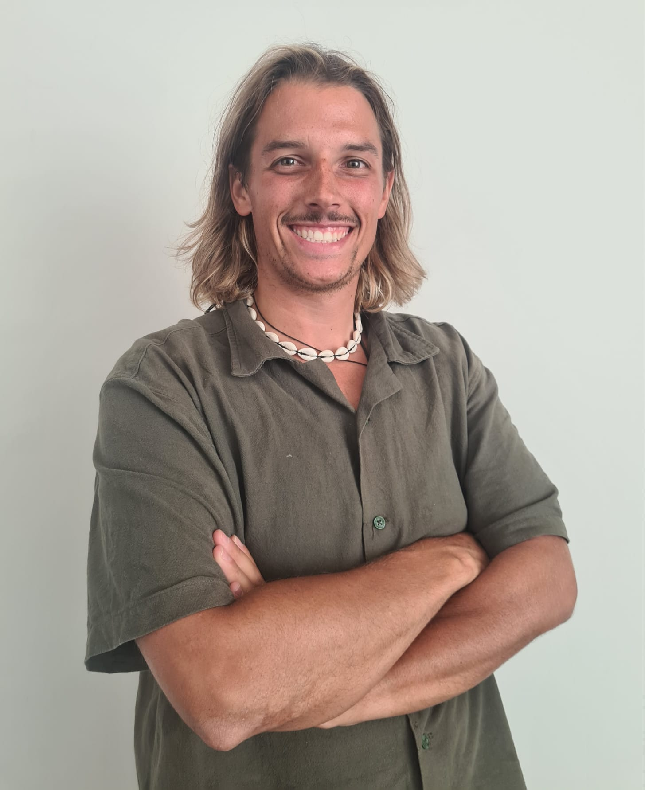
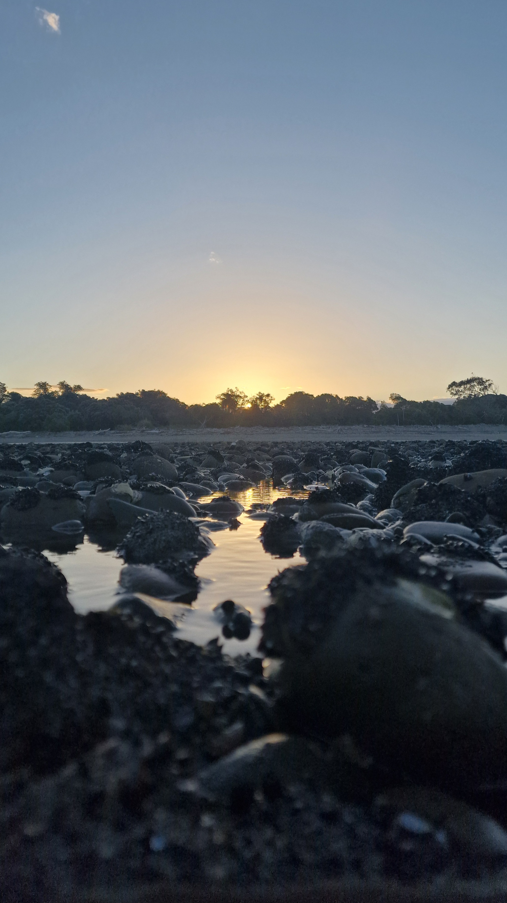
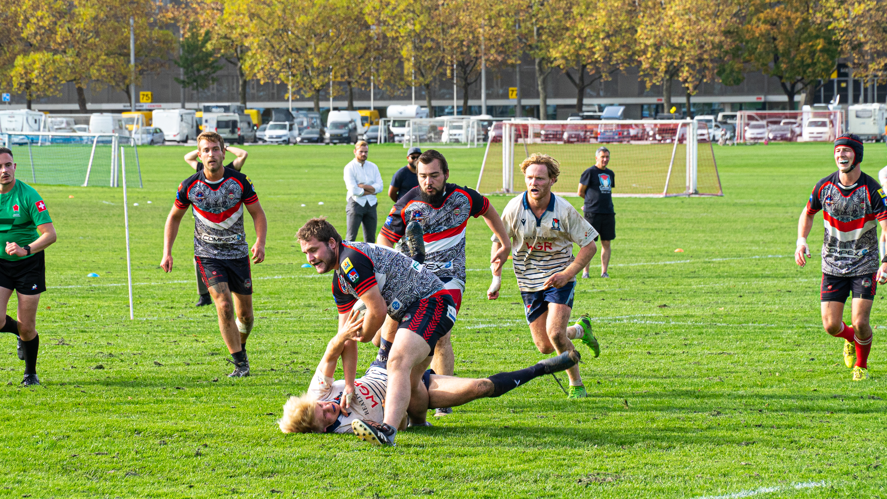
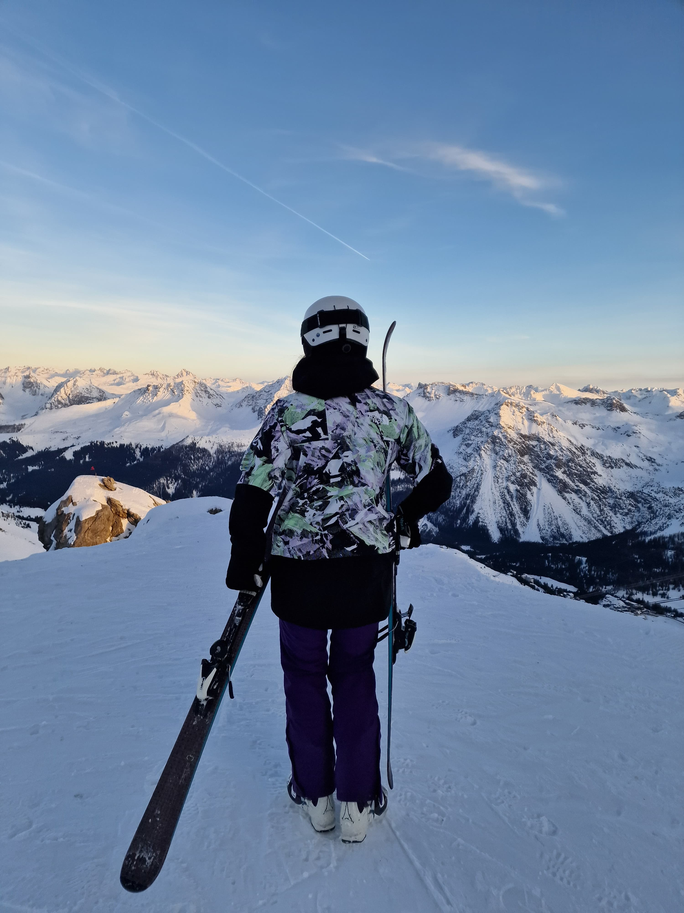
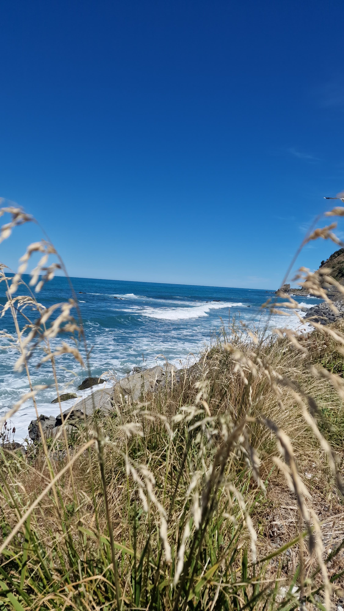

Nicolas Rossi
Creative Studio
Choose to like it
Choose to like it
Das Beste in jedem Detail zu sehen ist keine Ausrede – es ist eine Entscheidung. Und genau die steckt in jedem Bild, jedem Video, jeder Kampagne.
Meine Arbeiten
Ich erstelle Videos, Fotografie und Content für Social Media, plane kreative Konzepte, setze Projekte um und helfe Marken und Personen, sichtbar zu werden. Zudem unterstütze ich Events in Planung und Moderation.
Von der ersten Strategie und Content-Planung bis hin zum fertigen Schnitt. Ich erstelle plattformgerechte Videos (Reels, TikToks, Shorts), die deine Zielgruppe fesseln und echte Reichweite aufbauen.

Ausdrucksstarke Bilder und Videos für Marken, Events und Abenteuer. Mein Fokus liegt auf dynamischen Aufnahmen im Freien, Sport-Action und authentischer Bildsprache für Web und Print.

Reibungslose Organisation von der Konzeption bis zur Umsetzung vor Ort. Zusätzlich bringe ich als Moderator auf der Bühne oder Host vor der Kamera die nötige Energie in dein Event.

Frischer Wind für dein Branding: Ich helfe beim Ideation-Prozess für neuartige Werbeformate, gebe Ratschläge für eine ansprechende Website-Ästhetik und entwickle kreative Event- & Produktkonzepte.

Lerne mich kennen
Andere brauchen Pinsel und Stift, um Geschichten zu erzählen – ich mach das lieber mit der Kamera. Am liebsten setze ich meine eigenen Ideen selbst um, ob als Host vor der Kamera oder mit der Regie dahinter. Nebenbei entstehen dabei immer wieder eigene, kreative Videos für Social Media.
Im Spitzensport bin ich auch unterwegs: Auf dem Stand Up Paddle trainiere ich gerade auf mein grosses Ziel hin – die WM.
Auch auf Reisen schalte ich selten wirklich ab: Unterwegs hab ich zum Beispiel Aroa Jun mit Social-Media-Content und kreativen Kampagnen-Ideen unterstützt.
Curriculum Vitae
Ein Überblick über meinen beruflichen Werdegang
Kursleiter & Stationsleiter
SUPKultur GmbH, Zürich
Durchführung von SUP-Anfängerkursen, Privatstunden und Kinderklassen. Betreuung und Koordination von Schulklassen auf dem Wasser.
Klassenlehrer Primarschule
Primarschule Fondli, Dietikon
Klassenzentrierte Führung, Unterrichtsgestaltung sowie pädagogische Verantwortung für eine Primarklasse.
Französischlehrer
Sekundarschule, Adliswil
Fachspezifischer Unterricht der französischen Sprache auf Sekundarstufe unter Nutzung nativer Zweitsprachkompetenzen.
Bachelorstudium Multimedia Production
Fachhochschule Graubünden (FHGR) & Berner Fachhochschule (BFH)
Joint-Degree-Bachelorstudium mit Abschluss als Bachelor of Science in Media Engineering, Vertiefung Live Communication. Bachelor Thesis zum Thema «Medien und die Tabuisierung der mentalen Gesundheit im Spitzensport».
Praktikant Online Marketing
Digital Minds
Erstellung von Online-Inhalten in WordPress, Unterstützung im Affiliate-Marketing sowie Durchführung von On-Page & Off-Page SEO-Massnahmen.
Kundendienst-Mitarbeiter
Migros-Service, Bülach
Betreuung von Kunden- und Filialanfragen, Koordination mit Lieferanten sowie Analyse und Bearbeitung von Reklamationen.
Kaufmännische Ausbildung (EFZ)
green.ch AG, Lupfig
Abwicklung administrativer Aufgaben, Kundenbetreuung, Zahlungsverarbeitung und Unterstützung bei der Eventorganisation.
🗣️ Sprachkompetenzen
• DE & FR: Zweisprachig aufgewachsen (Muttersprachen)
• EN: Verhandlungssicher im beruflichen & kreativen Umfeld, fliessend durch 1 jährigen Aufenthalt in Neuseeland
Ein paar Eindrücke von meiner Arbeit




